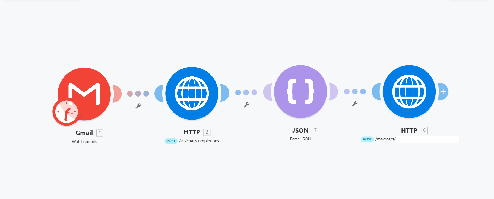

1. 背景
営業活動や顧客対応の内容はメール・メモ・チャットなどに分散しやすく、 日報作成やチーム共有に手間がかかる課題がありました。 そこで、メール受信を起点にAIで内容を整理し、1日分を自動でSlackへ共有する仕組みを作成しました。
2. 課題
- 営業日報の作成が手作業で、担当者の負担になっていた
- メール本文から要点を抜き出す作業に時間がかかっていた
- 日報のフォーマットや粒度が担当者によってばらつきやすかった
- 1日の対応内容をまとめて共有する仕組みがなかった
3. 解決方法
Gmailで対象メールを受信したタイミングでMakeが検知し、 メール本文をChatGPT APIへ送信。 AIが営業日報形式に整形した内容をGAS経由でGoogle Sheetsへ保存し、 定刻に1日分の内容をSlackへ自動投稿する構成にしました。
Gmail受信 → Makeで検知 → ChatGPT APIで日報化 → GAS → Google Sheets保存 → 定刻にSlack投稿
4. システム構成図
処理の流れは以下の通りです。
① Gmail
↓ メール受信をトリガーに起動
② Make
↓ 本文抽出・APIリクエスト制御
③ ChatGPT API
↓ 日報形式に要約・整形
④ Google Apps Script
↓ Google Sheetsへ保存
⑤ Google Sheets
↓ 1日分のデータを蓄積
⑥ Slack
定刻にチャンネルへ自動投稿
↓ メール受信をトリガーに起動
② Make
↓ 本文抽出・APIリクエスト制御
③ ChatGPT API
↓ 日報形式に要約・整形
④ Google Apps Script
↓ Google Sheetsへ保存
⑤ Google Sheets
↓ 1日分のデータを蓄積
⑥ Slack
定刻にチャンネルへ自動投稿
| 自動化基盤 | Make |
|---|---|
| 入力 | Gmail本文 |
| AI処理 | ChatGPT API |
| 保存先 | Google Sheets |
| 中継処理 | Google Apps Script |
| 通知先 | Slack |
5. 画面・スクリーンショット
Makeシナリオ画面
Gmail受信を起点に、AIで日報化してGoogle Sheetsへ保存する自動化フロー
Gmailで受信したメール本文をMakeで取得し、ChatGPT APIに送信。 AIが日報形式に整理した結果をJSONとして扱い、GAS経由でGoogle Sheetsへ保存する構成です。

処理の流れ
① Gmailにてメールを受信
② Makeで検知し、HTTPモジュールからChatGPT APIへ送信
③ AIの出力をJSONとして整形
④ GASのWebhookへ送信
⑤ Google Sheetsへ保存し、後続のSlack通知に活用
① Gmailにてメールを受信
② Makeで検知し、HTTPモジュールからChatGPT APIへ送信
③ AIの出力をJSONとして整形
④ GASのWebhookへ送信
⑤ Google Sheetsへ保存し、後続のSlack通知に活用
出力結果（想定）
日報データを蓄積し、Slackへ定時共有
Google Sheetsに保存した日報データをもとに、1日分の対応内容をまとめてSlackへ投稿する構成です。 顧客名、対応概要、次回アクション、リスク、所要時間などをチーム内で確認しやすい形に整理します。
Google Sheets保存 → 1日分を集計 → Slackへ定時投稿
・対応内容の共有漏れを防止
・日報フォーマットを標準化
・次回アクションやリスクを見える化
・対応内容の共有漏れを防止
・日報フォーマットを標準化
・次回アクションやリスクを見える化
6. 技術スタック
Make Gmail OpenAI API ChatGPT Google Apps Script Google Sheets Slack API JSON Webhook7. 工夫した点
- ChatGPT APIの出力をJSON形式に固定し、後続処理で扱いやすくした
- MakeのHTTPモジュールを使い、AI APIとの連携を柔軟に構成した
- Google Sheetsに一度保存することで、1日分をまとめて投稿できるようにした
- Slackには即時投稿ではなく、定刻投稿にすることで日次報告として使いやすくした
- メール本文が短い場合でも、顧客名・対応内容・次回アクション・リスクを整理できるようにした
8. 成果・効果
- 営業日報の作成作業を自動化
- メール内容から要点を自動抽出し、共有用フォーマットに整形
- 日報の品質・粒度を標準化
- Slackへの定時投稿により、チーム内の情報共有を効率化
- Make・GAS・AI APIを組み合わせた実務向け自動化フローを構築